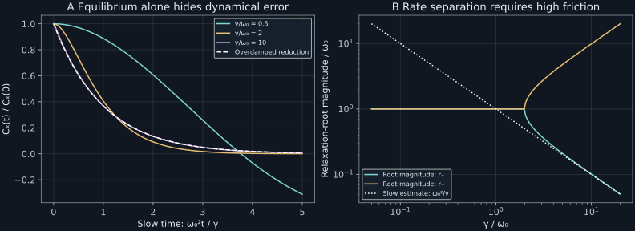

Chapter 11 · Lecture 14
Confinement, phase space, and the overdamped limit
A trapped Brownian particle has the correct equilibrium position histogram in both an inertial model and its overdamped approximation. That agreement does not certify the dynamics. With natural frequency set to one and damping rate 0.5, the exact normalized position covariance at time 0.5 is 0.887137; the overdamped approximation predicts 0.367879. This chapter determines when eliminating velocity preserves the slow relaxation and when an equilibrium test conceals a large dynamical error.
Based on NPTEL lecture 14, including its recap of free phase-space motion, harmonic confinement, high-friction approximation, general Kramers equation, and magnetic-field bridge. The covariance calculations, numerical comparisons, and exercises are original developments. The lecture's suggestions of scalar Markov behavior are qualified below: the full inertial state is the position–velocity pair.
11.1 Restoring force creates two relaxation modes L14 15:19
Retain the mass $m\gt0$, temperature $T\gt0$, thermal velocity variance $\theta=k_BT/m$, drag rate $\gamma\gt0$, and standard Wiener process $W_t$ of chapter 10. Let the potential energy be $U(x)=m\omega_0^2x^2/2$, where $\omega_0\gt0$ is the undamped angular frequency in inverse seconds. Its force is $-U'(x)=-m\omega_0^2x$. The model is
$$dX_t=V_tdt,\qquad dV_t=(-\gamma V_t-\omega_0^2X_t)dt+\sqrt{2\gamma\theta}\,dW_t.\tag{11.1}$$Noise and drag retain the thermal relation established in chapter 10. Confinement changes the position behavior: excursions now store potential energy and generate a restoring force. A finite position variance is possible at equilibrium, whereas the free particle has unbounded displacement variance.
The stochastic integral has zero mean. Taking expectations of (11.1) gives $\dot{\bar x}=\bar v$ and $\dot{\bar v}=-\gamma\bar v-\omega_0^2\bar x$. Eliminating $\bar v$ gives the second-order equation and quadratic roots. If the discriminant is negative, both real parts are $-\gamma/2$. If it is nonnegative, its square root is strictly smaller than $\gamma$, so both real roots are negative. ∎
For $\gamma\lt2\omega_0$, the mean oscillates with damped frequency $\Omega=\sqrt{\omega_0^2-\gamma^2/4}$ inside a decaying envelope. At $\gamma=2\omega_0$, the repeated root yields $(a+bt)e^{-\omega_0t}$, with constants set by initial position and velocity. For $\gamma\gt2\omega_0$, there are two decaying exponentials. “Overdamped” identifies the nonoscillatory root regime; the controlled elimination of velocity needs the stronger separation $\gamma\gg\omega_0$.
Eigenvalues describe mean relaxation. They do not alone prove thermal equilibrium, identify its variance, or license replacing every observed coordinate by a scalar OU process. The restoring force couples velocity to position, so knowing only velocity does not determine its future drift. The same issue holds for position alone at finite inertia.
11.2 The phase-space equation and its thermal density L14 39:18
Replace the harmonic energy by a differentiable potential $U(x)$. Assume its force is regular enough for a nonexplosive Langevin solution and for the forward equation and integrations below. The position–velocity probability density $\rho(x,v,t)$ obeys the Kramers equation
$$\partial_t\rho=-v\partial_x\rho+\frac{U'(x)}m\partial_v\rho+\gamma\partial_v(v\rho)+\gamma\theta\partial_v^2\rho.\tag{11.3}$$The first two terms stream probability along Hamiltonian trajectories; the last two describe damping and velocity diffusion. Writing $\partial_t\rho=-\partial_xJ_x-\partial_vJ_v$ identifies $J_x=v\rho$ and $J_v=-(U'/m+\gamma v)\rho-\gamma\theta\partial_v\rho$. Probability conservation follows by integrating this divergence when boundary fluxes vanish.
The derivatives are $\partial_x\rho_{\mathrm{eq}}=-U'\rho_{\mathrm{eq}}/(k_BT)$ and $\partial_v\rho_{\mathrm{eq}}=-v\rho_{\mathrm{eq}}/\theta$. Therefore $-v\partial_x\rho_{\mathrm{eq}}$ cancels $(U'/m)\partial_v\rho_{\mathrm{eq}}$. Separately, $v\rho_{\mathrm{eq}}+\theta\partial_v\rho_{\mathrm{eq}}=0$, so the two dissipative terms cancel. All four terms sum to zero. Finite $Z$ supplies normalization. ∎
At equilibrium, the dissipative velocity current vanishes, but the reversible phase-space currents generally do not: $J_x=v\rho_{\mathrm{eq}}$ and the remaining velocity current is $-U'\rho_{\mathrm{eq}}/m$. Their divergences cancel. Requiring every current component to vanish would incorrectly remove Hamiltonian streaming. Equilibrium reversibility treats velocity as odd under time reversal; it is not the same statement as zero spatial and velocity current separately.
For harmonic $U$, (11.4) factors into independent Gaussians with $\operatorname{Var}(X)=\theta/\omega_0^2$, $\operatorname{Var}(V)=\theta$, and $\operatorname{Cov}(X,V)=0$. Each quadratic energy contributes $k_BT/2$ to the mean. The free limit $\omega_0\downarrow0$ makes the position normalization diverge on the whole line, consistently recovering the absence of a free spatial equilibrium. A box would introduce a different domain and boundary problem.
Kramers's original paper, printed pages 287–289, constructs the phase-space diffusion equation, imposes stationarity of the Boltzmann distribution, and separates the large-viscosity approximation. Its notation sets mass and Boltzmann's constant to one. Restoring units and separating reversible from dissipative currents makes the assumptions in (11.3) explicit. Existence of a stationary candidate by substitution still does not establish convergence or a barrier escape rate.
11.3 Covariance proves relaxation in the linear model L14 27:09
Define the state column $Y_t=(X_t,V_t)^\mathsf T$, drift matrix $A=\begin{pmatrix}0&1\\-\omega_0^2&-\gamma\end{pmatrix}$, and noise column $B=(0,\sqrt{2\gamma\theta})^\mathsf T$. The matrix form is $dY=AYdt+BdW$. Its solution is $Y_t=e^{At}Y_0+\int_0^te^{A(t-s)}B\,dW_s$. For deterministic initial state the noise is Gaussian. Its covariance $C_{\mathrm{cond}}(t)$ is the integral of $e^{As}BB^\mathsf Te^{A^\mathsf Ts}$ from zero to $t$.
Let $\Sigma=\operatorname{diag}(\theta/\omega_0^2,\theta)$, where $\operatorname{diag}$ denotes a diagonal matrix with the listed entries. Direct multiplication gives $A\Sigma+\Sigma A^\mathsf T+BB^\mathsf T=0$, called the stationary covariance or Lyapunov equation. Differentiating $e^{At}\Sigma e^{A^\mathsf Tt}$ and integrating proves
$$C_{\mathrm{cond}}(t)=\Sigma-e^{At}\Sigma e^{A^\mathsf Tt}.\tag{11.5}$$Stability established in Proposition 11.1 makes $e^{At}$ tend to zero. The conditional mean tends to zero and $C_{\mathrm{cond}}(t)$ tends to $\Sigma$, so the Gaussian transition laws converge to the Gaussian equilibrium. This supplies the distributional relaxation argument missing from mean stability alone. For random initial data independent of future noise, the contracted initial contribution also vanishes in probability under ordinary finite-moment assumptions.
With equilibrium initial data, the lag covariance matrix is $e^{At}\Sigma$ for $t\geq0$. Define normalized position covariance $f(t)=\mathbb E[X_tX_0]/\Sigma_{xx}$. It satisfies the damped mean equation with $f(0)=1$ and $f'(0)=0$. For unequal roots,
$$f(t)=\frac{-r_-e^{r_+t}+r_+e^{r_-t}}{r_+-r_-}.\tag{11.6}$$The numerator coefficients enforce both initial conditions. At critical damping, take the repeated-root limit or solve directly: $f(t)=(1+\omega_0t)e^{-\omega_0t}$. For underdamping, an explicitly real form is $e^{-\gamma t/2}[\cos(\Omega t)+(\gamma/(2\Omega))\sin(\Omega t)]$. These formulas recover $f'(0)=0$, consistent with differentiable position and zero equal-time cross-covariance. A scalar OU covariance instead has a cusp at zero. The inertial harmonic position is stationary Gaussian when initialized at equilibrium, but its covariance shows that it is generally not scalar Markov.
The equilibrium displacement MSD is $2\Sigma_{xx}[1-f(t)]$. It approaches $2\theta/\omega_0^2$ for large lag, rather than growing indefinitely. The positional variance relative to a fixed origin approaches $\theta/\omega_0^2$. The factor of two arises because an equilibrium displacement subtracts two decorrelated random endpoints; it is not a disagreement about equipartition.
The same correlation area can conceal a different time law
The tracking case exposes a second possible false validation. Define the integrated normalized position covariance $\tau_x=\int_0^\infty f(t)dt$. Because the stable solution and its derivative decay exponentially, integrating $f''+\gamma f'+\omega_0^2f=0$ gives $[f']_0^\infty+\gamma[f]_0^\infty+\omega_0^2\tau_x=0$. The initial conditions make the first term zero and the second term $-\gamma$. Therefore $\tau_x=\gamma/\omega_0^2$ exactly, even when the motion is underdamped. The reduced exponential has the same integral.
Thus matching the equilibrium variance and this integrated covariance still does not establish the reduced process. At weak damping, the covariance oscillates slowly while positive and negative lobes cancel, producing a small signed area. A short signed correlation area is not necessarily rapid loss of all temporal dependence. The envelope lifetime is $2/\gamma$ in the oscillatory regime and becomes long when damping is weak. The high-friction position correlation time becomes large for a different reason: its slow real mode has rate approximately $\omega_0^2/\gamma$.
The lab integrates the exact matrix-exponential covariance by independent quadrature. For $\omega_0=1$ and damping rates 0.5, 2, and 10, the areas are 0.5, 2, and 10, although their covariance shapes differ in Figure 11.1. An experiment that estimates only a covariance area would miss the discrepancy in the opening example. Retaining the lag dependence or measuring a frequency response tests more of the model.
Initial-state relaxation and equilibrium motion answer different questions
For deterministic initial state $y_0$, the conditional mean is $e^{At}y_0$ and conditional covariance is (11.5). For example, if the trap center is suddenly shifted relative to an initially displaced particle, the observed ensemble mean relaxes with both characteristic modes. Equilibrium time correlation instead averages over an initially random Gaussian state and follows the first column of $e^{At}\Sigma$. Its particular combination of modes is fixed by $f'(0)=0$; a displaced deterministic state with arbitrary initial velocity can have a different combination. The roots belong to the dynamics, but amplitudes belong to the preparation and observable.
This distinction also explains the critical expression. The coefficient of $t e^{-\omega_0t}$ is set by a repeated root together with the initial derivative, rather than introduced as an ad hoc correction to an exponential fit. Matrix propagation handles that degeneracy continuously. An implementation based on separately evaluating the two nearly equal roots can lose numerical precision through subtraction even though the physical covariance is smooth in the damping parameter.
11.4 Eliminate velocity only after separating the time scales L14 30:21
Suppose $\varepsilon=\omega_0/\gamma\ll1$. Expanding the square root in (11.2) gives the slow root $r_+=-\omega_0^2/\gamma+O(\omega_0^4/\gamma^3)$ and fast root $r_-=-\gamma+\omega_0^2/\gamma+O(\omega_0^4/\gamma^3)$. Velocity adjusts over time $1/\gamma$ while position relaxes over time $\gamma/\omega_0^2$. Their ratio is $\varepsilon^2$. The slow-root approximation is controlled by that small parameter, rather than merely by the absence of oscillations.
On slow time scales, the constant-friction reduction is the Smoluchowski equation associated with
$$dX_t=-\frac{U'(X_t)}{m\gamma}dt+\sqrt{\frac{2k_BT}{m\gamma}}dW_t.\tag{11.7}$$For harmonic confinement it is a scalar OU process with decay rate $\omega_0^2/\gamma$, stationary variance $\theta/\omega_0^2$, and normalized equilibrium covariance $e^{-\omega_0^2t/\gamma}$. It preserves the Gibbs position density but loses the fast mode and differentiable microscopic position paths. It should not be used to predict sub-momentum-time slopes or crossing counts without a resolution qualification.
A more informative derivation than deleting an acceleration symbol uses the first two velocity moments of (11.3). Define position density $p(x,t)=\int\rho\,dv$, position probability flux $j(x,t)=\int v\rho\,dv$, and second moment density $M_2(x,t)=\int v^2\rho\,dv$. Integrating gives $\partial_tp=-\partial_xj$ and $\partial_tj=-\partial_xM_2-(U'/m)p-\gamma j$. Local thermalization approximates $M_2\approx\theta p$; neglecting the fast derivative of $j$ yields $j\approx-[U'p/m+\theta\partial_xp]/\gamma$. Inserting this into continuity yields the forward equation of (11.7). The approximations are now visible: near-local Maxwellization, slow flux, and constant temperature and drag.
For rapidly varying forces, initial boundary layers, or position-dependent drag, those steps require further analysis. A Maxwell-shaped velocity marginal does not imply that the velocity distribution conditional on position is exactly local Maxwellian during transport. Kramers explicitly notes this distinction on printed page 289. Even in the linear trap, comparing (11.6) with the reduced covariance is a stronger dynamical check than matching histograms.

11.5 Laboratory: test a reduction with correlations
The laboratory sets $\theta=\omega_0=1$ and compares damping rates 0.5, 2, and 10. It computes matrix exponentials rather than dividing by nearly coincident roots. An independent continuous Lyapunov solver must return the known equilibrium covariance. Numerical integration of the noise kernel must reproduce (11.5), and the critical case must reproduce $(1+t)e^{-t}$. A seeded exact Gaussian update also checks that equilibrium covariance is preserved in an ensemble of 200,000 states.
Run python code/ch11_trap.py. It makes no network calls and writes JSON results and a text report beside the script. The values below compare at one nominal slow relaxation time $t=\gamma/\omega_0^2$ for each model. Agreement at this single delay does not bound the entire covariance curve; Figure 11.1 supplies that broader comparison.
gamma t exact Cxx overdamped Cxx 0.5 0.5 0.88713672 0.36787944 2.0 2.0 0.40600585 0.36787944 10.0 10.0 0.36789873 0.36787944
import numpy as np
from scipy.linalg import expm
def position_correlation(t, gamma, omega0):
if t < 0 or gamma <= 0 or omega0 <= 0:
raise ValueError("invalid time, damping, or trap frequency")
drift = np.array([[0., 1.], [-omega0**2, -gamma]])
return expm(drift*t)[0, 0]The function returns the dimensionless stationary normalized position covariance for positive model parameters. It neither simulates a path nor writes a file. Its matrix form handles underdamped, critical, and overdamped cases uniformly. The full lab independently tests its normalization and covariance consequences rather than treating agreement between two rearrangements of the same scalar formula as sufficient.
11.6 What confinement and reduction establish
Harmonic confinement admits an exactly soluble Gaussian phase-space model. It has finite equilibrium scatter and no long-range free diffusion. General confining potentials can have a Gibbs stationary density without Gaussian transients or a single relaxation time. Multiple wells introduce rare escape events whose scales are not obtained by replacing a well with one oscillator. The Kramers equation is the starting point for that analysis, not an automatic escape-rate formula.
The overdamped reduction preserves the equilibrium position distribution under its constant-friction thermal assumptions. It changes path regularity and short-time dynamics. Spatially varying noise or mobility requires a specified stochastic convention and a thermodynamically consistent drift; those issues cannot be resolved by substituting a variable $\gamma(x)$ into every constant-coefficient formula. Chapter 13 makes the noise-induced drift explicit. A magnetic Lorentz force is linear but velocity dependent and does no work; chapter 15 uses the same matrix machinery with a rotation term.
11.7 Exercises with worked solutions
Exercise 11.1 — Correct histogram, wrong model (conceptual)
Why does agreement with the harmonic Gibbs position histogram fail to validate a high-friction approximation?
Worked solution
Both the inertial model and its reduced scalar OU model have position variance $\theta/\omega_0^2$. Their one-time equilibrium laws coincide. Their two-time laws differ: the inertial normalized covariance has initial slope zero and may oscillate, while the reduced covariance has initial right slope $-\omega_0^2/\gamma$ and decays as one exponential. A histogram discards time ordering. Measuring correlations or response across momentum and trap scales tests the eliminated dynamics.
Exercise 11.2 — Is there an equilibrium current? (conceptual)
A student rejects (11.4) because $J_x=v\rho_{\mathrm{eq}}$ is not zero. Identify the missing distinction.
Worked solution
Stationarity requires the divergence of total probability current to vanish, not every component of current. Hamiltonian streaming has $J_x=v\rho_{\mathrm{eq}}$ and $J_v=-U'\rho_{\mathrm{eq}}/m$. Their divergences cancel by the derivatives used in Proposition 11.2. Drag and diffusion contribute equal and opposite dissipative currents. Time reversal reverses velocity, so reversible phase-space transport can coexist with equilibrium. Imposing zero current componentwise imports a purely overdamped criterion into an inertial state space.
Exercise 11.3 — Critical damping without a singular denominator (derive)
Find the critical normalized position covariance directly from its differential equation.
Worked solution
At $\gamma=2\omega_0$, the equation has repeated root $-\omega_0$. Write $f(t)=(a+bt)e^{-\omega_0t}$. The condition $f(0)=1$ gives $a=1$. Differentiating at zero gives $f'(0)=b-\omega_0a=0$, so $b=\omega_0$. Therefore $f=(1+\omega_0t)e^{-\omega_0t}$. This is finite although the unequal-root expression appears to be zero divided by zero. For $\omega_0=t=1$, it gives $2/e=0.73575888$, checked by the matrix exponential.
Exercise 11.4 — Derive the saturation of displacement scatter (derive)
For a stationary harmonic particle, derive the displacement MSD and its short- and long-time limits.
Worked solution
Expand $(X_t-X_0)^2$ and use equal stationary variances to obtain $2\Sigma_{xx}-2\mathbb E[X_tX_0]=2\theta[1-f(t)]/\omega_0^2$. Since $f(0)=1$, $f'(0)=0$, and the differential equation gives $f''(0)=-\omega_0^2$, its short-time form is $\theta t^2$. It is ballistic, consistent with finite velocity variance. Stability makes $f(t)\to0$, giving long-time limit $2\theta/\omega_0^2$. A zero-initial-position variance instead tends to one equilibrium variance, explaining the different factor.
Exercise 11.5 — Quantify slow-root error (compute/design)
For $\omega_0=1$ and $\gamma=10$, estimate the slow root through the first correction and compare with the exact root.
Worked solution
Expanding $\sqrt{1-4/\gamma^2}$ through its quadratic term gives $r_+=-1/\gamma-1/\gamma^3+O(\gamma^{-5})$, hence $-0.101$. The exact expression is $(-10+\sqrt{96})/2$, approximately $-0.1010205$. The leading reduced rate is $-0.1$; its relative rate error is about one percent, consistent with the small parameter $\omega_0^2/\gamma^2=0.01$. The lab retains exact roots in JSON. This rate comparison does not uniformly bound covariance error at every time, because the exact covariance also includes a fast component and its amplitude.
Exercise 11.6 — Design a covariance-preserving simulator (compute/design)
Given step $h\gt0$, equilibrium covariance $\Sigma$, and stable harmonic drift $A$, construct an exact Gaussian update and its strongest simple equilibrium check.
Worked solution
Compute $E=e^{Ah}$ and $C_{\mathrm{cond}}=\Sigma-E\Sigma E^\mathsf T$. Factor $C_{\mathrm{cond}}=LL^\mathsf T$ and set $Y_{n+1}=EY_n+LZ_n$, with independent two-component standard Gaussian columns $Z_n$. If $Y_n$ has covariance $\Sigma$ and is independent of $Z_n$, the next covariance is $E\Sigma E^\mathsf T+C_{\mathrm{cond}}=\Sigma$ exactly. Also check lag covariance $\mathbb E[Y_{n+1}Y_n^\mathsf T]=E\Sigma$: an incorrect independent resampling of equilibrium states would pass the equal-time test but fail this one. Use numerical quadrature of the noise kernel to verify $C_{\mathrm{cond}}$ independently and monitor roundoff at tiny steps.
11.8 Sources and attribution
- V. Balakrishnan, NPTEL lecture 14, course 115106089. The complete acquired caption text supplies the topic spine; selected stills support only partial visual checking.
- H. A. Kramers, Brownian motion in a field of force and the diffusion model of chemical reactions, Physica 7, 284–304 (1940), printed pages 287–289, especially equations (8)–(11); verified scan. This chapter uses its phase-space and large-viscosity distinctions, with independent modern derivations.